La Sèmide dai Agnèi, giudicata da Dario Marini «il più straordinario percorso trovato in ogni tempo sulle Alpi Giulie», fa parte di un'epoca prealpinistica ormai lontana dai giorni nostri: attraverso la Sèmide venivano mandate le greggi a pascolare sui pendii a Nord della Puartate e pure oltre, in territorio di Raccolana, sul Plan de la Cjavile, che è un ertissimo prato attorniato da precipizi.
Il nome e il tracciato della Sèmide dai Agnèi sono stati recuperati in extremis da Vladimiro Dougan negli anni '30, prima che il ricordo popolare svanisse per sempre nella leggenda, e tutt'ora la Sèmide conserva il suo antico fascino, grazie anche alle poche visite che riceve.
Ho deciso di partire dalla val Dogna non tanto per motivi storici — peraltro probabilmente errati — quanto più per il semplice desiderio di conoscere anche questo versante. Dico «motivi storici errati» poiché, come mi ha fatto notare A. Armellini, la narrazione classica secondo cui gli abitanti di Dogna dovettero ricorrere questa "misura estrema" per contrastare la mancanza di pascoli nella valle, semplicemente non sta in piedi: i dognesi avevano i pascoli di Bielìga, di Plan dai Spadovai, di Sompdogna; erano quelli di Cadramazzo che non avevano nulla!
Già dalla partenza vediamo lassù — lontanissimo — lo Jôf di Misdì, fasciato alla base dalla cengia della Sèmide.
Partiti a camminare alle 6.15, ancora non potevamo immaginare di arrivare a Patoc alle... 21.15!
Lo Jôf di Góliz vigila imponente, con accanto l'esile sentinella del Mucul.
Lo sperone mugoso in basso è il Cuel dai Gjais, che abbiamo visitato un mese addietro nell'avventurosa traversata dalla Costa di Góliz al rio Saline.
Attraversiamo la pittoresca forra dello Sfonderât: passaggio non facilissimo.
Sull'altro versante Chiout di Gus con l'ominima pala che permette di accedere al mitico e dimenticato sentiero per forcella Mincigos, percorso lo scorso inverno.
Parlare con l'autore di Trois Neris mi ha fatto capire che questo versante (Sud dello Jôf di Dogna) è interessantissimo e c'è molto altro oltre al sopramenzionato sentiero. Avrò scattato una trentina di telefoto solo di questo versante!
L'ex CAI 619 è molto bello e finalmente ho l'occasione per percorrerlo, seppur parzialmente.
Le fondamenta dei piloni intermedi della teleferica del Cuel da la Bareta, che collegava Chiout in val Dogna con la cima.
Dopo un bel po' di ore sbuchiamo sul costone di mughi che lo Jôf di Misdì protende verso Nord.
Lo Jovèt di Cjadramàç, di cui abbiamo percorso tutta la mugosa cresta Ovest.
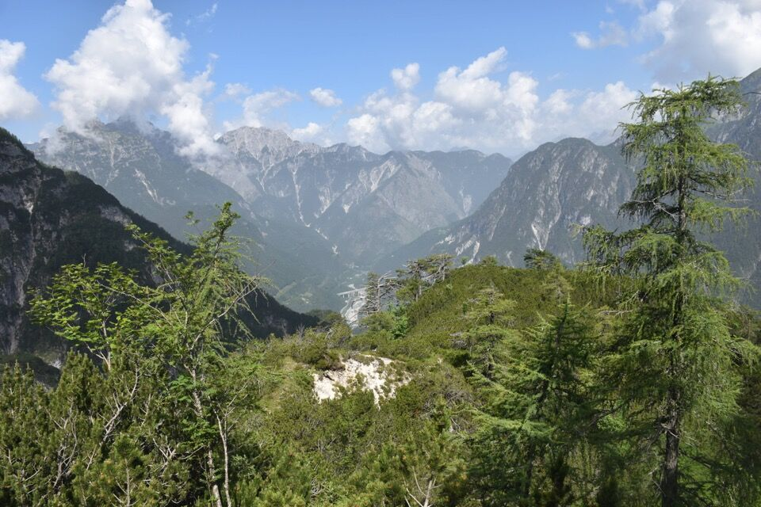C'avviciniamo allo Jôf di Misdì: l'emozione è tanta.
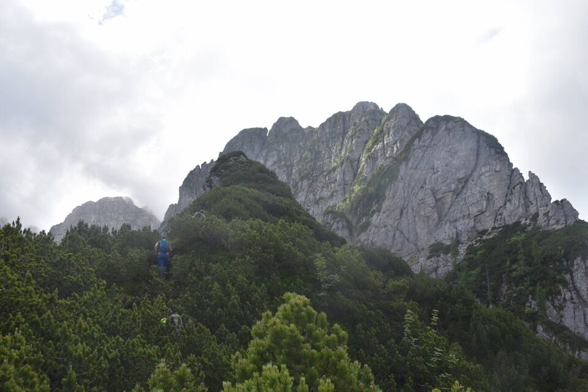 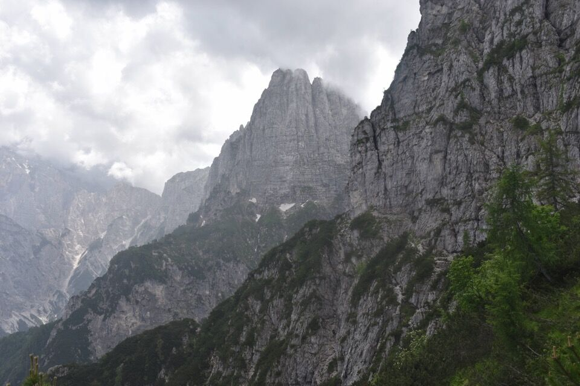 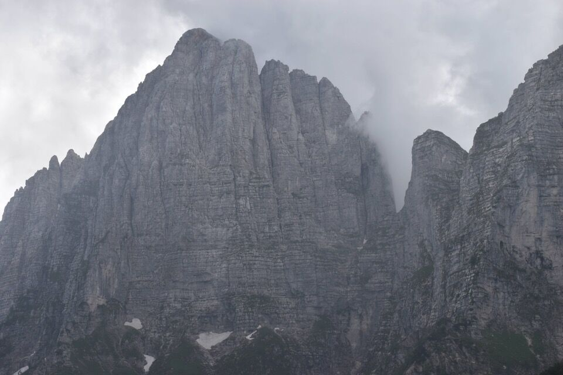Ci affacciamo su uno sperone a cavallo fra lo Sfonderât e il vallone Cjalderatis: visione indimenticabile che una foto non può riassumere.
Certo che a trovare bolli rossi pure qua... meglio che non commento. Col tempo andranno via, non c'è altra consolazione.


L'interruzione della cengia: passaggio piuttosto impegnativo.
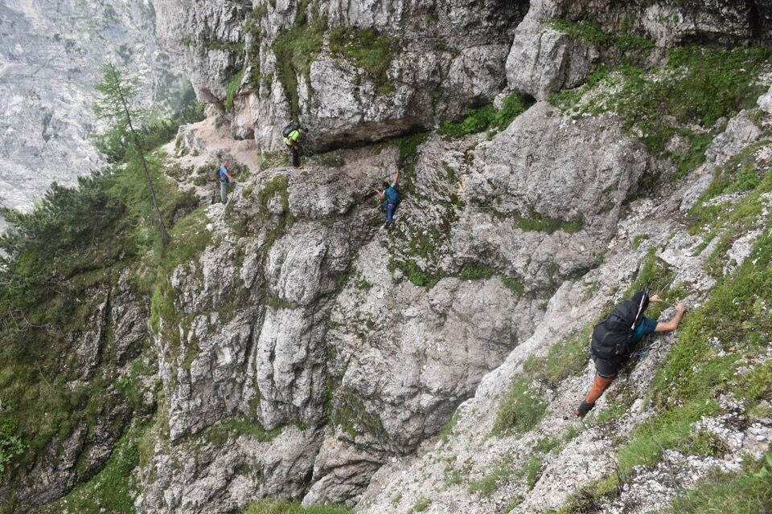Abitante del luogo.
Ci siamo quasi. Oltre che esausto sono tormentato dal dubbio: cosa fare, andare prima alla Puartate o prima sulla forca del rio da lis Fontanis e quindi sullo Jovet Blanc per poi scendere alla Puartate per versante Sud? Ovvio che conveniva la seconda scelta e che avremmo risparmiato fatica, ma per puri motivi ideologici ho scelto la prima: la Sèmide finisce alla Puartate. Lo Jovèt Blanc non è la mèta ma solo la ciliegina sulla torta. (Detesto chi vede solo cime in montagna)
Alla Puartate c'ero già stato due volte prima ma stupidamente mai ero andato a vedere il foro: un luogo meraviglioso.
Difficilmente dimenticheremo — dopo più di sette ore di caldo e afa — il provvidenziale flusso d'aria fresca attraverso il foro!
Con grande emozione arriviamo alla Puartate.
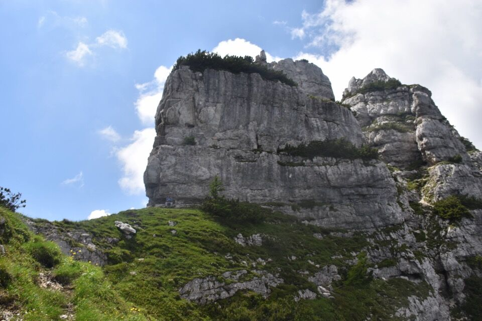Il sorriso di chi sognava questo luogo da anni.
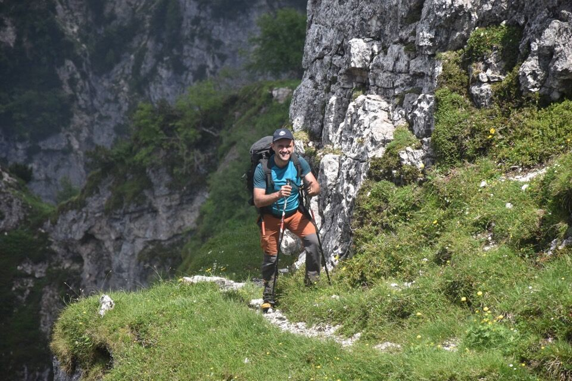In quattro e quattr'otto saliamo allo Jovèt Blanc, dato che conoscevo già il percorso.
Merita anche solo per vedere dall'alto l'impressionante vallone del rio da lis Fontanis: che luogo incredibile.
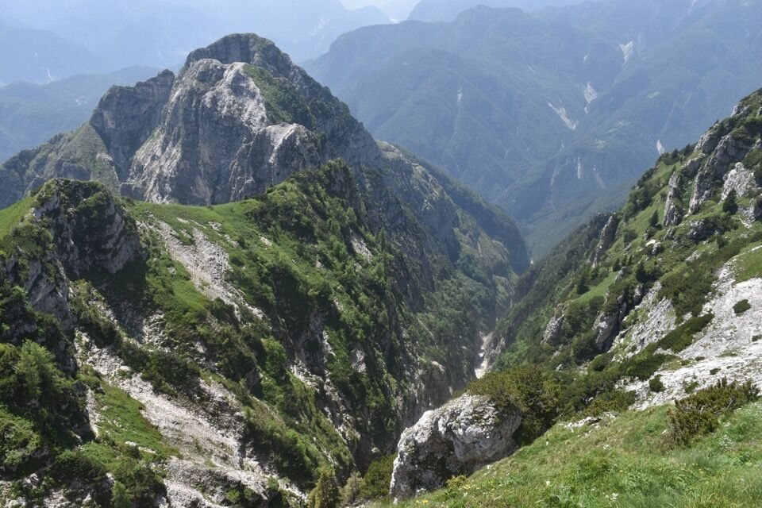Stambecchi in picchiata sul troi de Male Làvare!
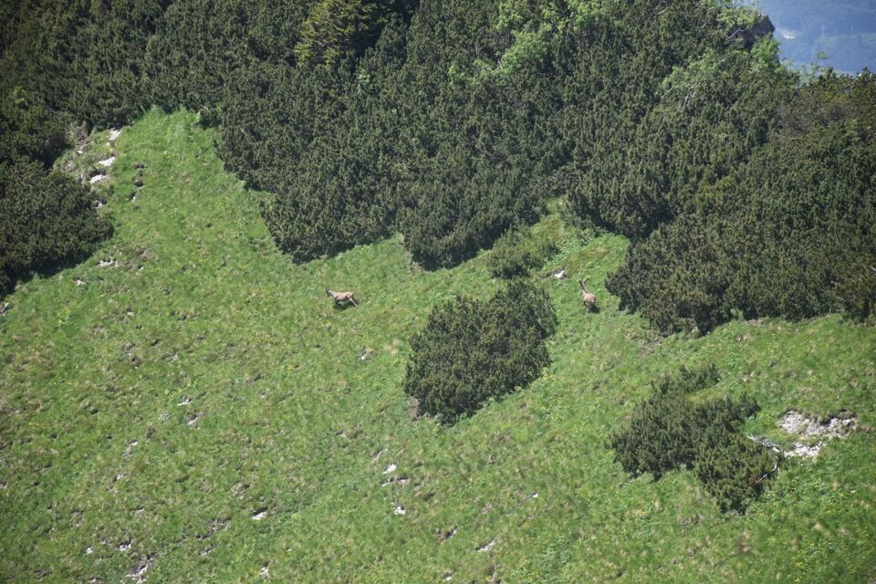In cima.
Jôf di Misdì, fortezza di camosci (non è un modo di dire: li si vede spesso in cima!).
Il tempo inaspettatamente migliora: la vista verso il Cimòn e il Ciuc de Valisete è bellissima dallo Jovèt Blanc.
Il mugoso Jovèt di Cjadramàç su cui abbiamo gironzolato a lungo qualche settimana fa; dietro il Cuel da la Bareta.
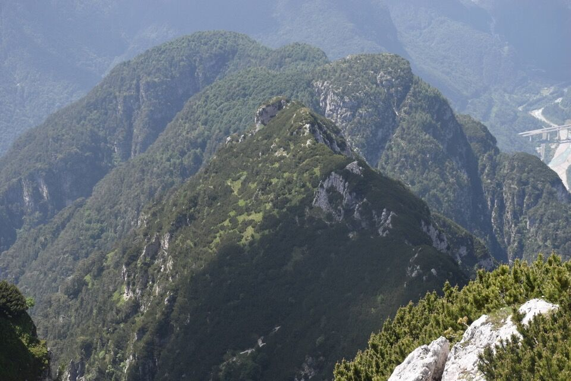Iniziamo a scendere: i prati così verdi rendono davvero bello l'ambiente.

Andiamo spediti perché conosco già il percorso.
Stiamo alti fin sul coston dai Sbrici...
...e facciamo scappare qualcuno che se ne stava comodamente spaparanzato.
Già che ci siamo visitiamo il clapusç dal Clocugnon, sotto la parete Sud della cima da lis Miris.
L'ambiente è eccezionalmente bello, col verde intenso e le fantastiche stratificazioni calcaree del Ciuc di Vallisetta.
È ora di salutare la Puartate e iniziare a scendere per Sbrici.
Zona dell'ex stavolo Sbrici: là davanti lo sperone su cui termina la cengia che a suo tempo volevo percorrere con Kelen (vedi qui).
Percorrere il "sentiero" che già conosco bene e arrivare presto a Patoc? Eh no!
Su suggerimento di A. Armellini andiamo in cerca di quello che a oggidì è il miglior itinerario per Sbrici. Di trovare una S su un albero proprio non me l'aspettavo! Bollinato? No, due rami piegati e null'altro!
La faccenda si fa seria: dopo undici ore di cammino, quasi disitratati, ci tocca scendere per una pala di pini ripidissima; complici la totale assenza di segni umani e il terreno pieno di salti, è normale che venga l'ansia di dover tornare su e la cosa non sarebbe stata per nulla piacevole.
Però però... la traccia delle bestie è molto evidente, e le indicazioni di Armellini sono chiare, per cui nonostante il malumore nelle retrovie procediamo; certo, ci ha toccato tirare fuori la corda due volte, ma alla fine ne siamo usciti. Usciti per modo di dire: si sbuca sul "percorso del Buscaini", ripido e disastrato dall'incendio.
Si ha occasione di vedere la mitica scala del Rop, che pochissimi conoscono. E io che pensavo di conoscedere bene Sbrici!
Difficile restare indifferenti a tale opera, quando ci si rende conto in che razza di posto si è.
Come dicevo, finito il pezzo ripidissimo si arriva alla zona disastrata dall'incendio: fortuna che c'ero passato già una volta, quando con Greta siamo scesi dallo Jovèt Blanc.
Non so come ma sono riuscito a fare esattamente lo stesso percorso, ritrovando (per puro caso) le piegature fatte a suo tempo, che ho abbondantemente rinnovato.
La luce della sera scende sul Sart e sulla cresta Indrinizza. Che ricordi!
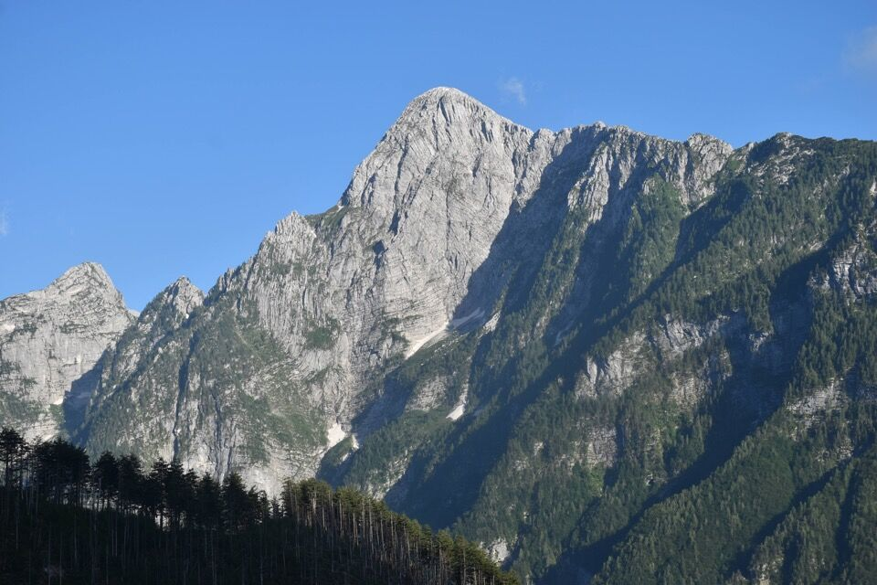Scendiamo col tramonto a Patoc: il CAI 620 in discesa è una gioia per gli occhi.